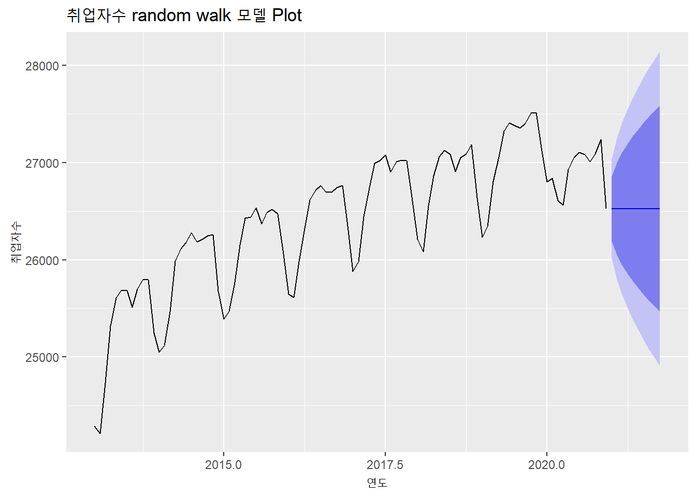
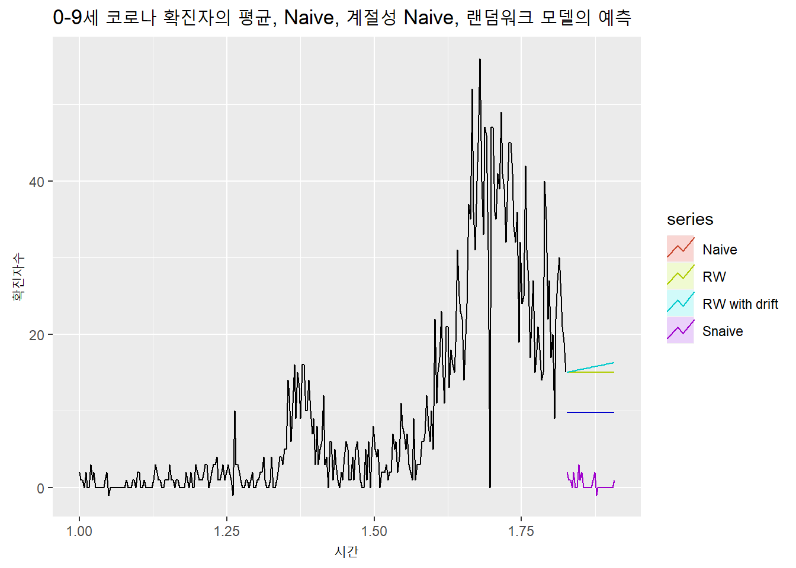

6.4 Random Walk 모델
랜덤 워크는 미래 값은 현재 값에 랜덤 값의 영향을 받는다는 모델이다. 랜덤 워크라는 용어는 마치 술 취한 사람이 걷고 있는 모습과 비슷하다는 점에서 붙여진 용어이다. 앞선 Naïve 모델과 유사한 모델이지만 마지막 데이터에 예측이 어려운 랜덤 값의 변동이 추가된다는 점에서 차이가 있다. 주식의 예에서 보면 내일의 종가는 오늘의 종가에 오늘의 주가 변동이 반영된 값이다. 오늘의 주가 변동은 사전에 알기 어렵고 예측도 어렵기 때문에 랜덤 값으로 간주한다면 이 경우가 랜덤 워크 모델이다. 랜덤 워크에는 어제 값 이외에 의미 있는 정보가 없기 때문에 예측이 복잡하지 않다4.
랜덤 워크 모델은 매우 간단한 모델 같지만 이 모델은 주식 예측이나 금융권 미래 예측에 많이 활용되고 있고 과학 분야에서도 기체 분자 움직임의 모델링에도 사용하는 활용도가 높은 모델이다.
랜덤 워크 모델은 드리프트가 없는 모델과 드리프트가 존재하는 모델의 두가지 종류가 있다. 드리프트가 존재하는 모델은 랜덤워크 모델을 기반으로 하지만 예측값이 시간의 흐름에 따라 상수적으로 증가하거나 감소하는 모델이다.
랜덤 워크 모델은 forecast 패키지의 rwf()를 이용하여 생성할 수 있다. 앞서 설명한 드리프트의 유무는 drift 매개변수를 통해 설정할 수 있다.
# 학생수계 열에 대한 random walk 모델의 상세 정보와 plot
students.ts[,2] %>% rwf() %>% summary()
Forecast method: Random walk
Model Information:
Call: rwf(y = .)
Residual sd: 77849.7308
Error measures:
ME RMSE MAE MPE MAPE MASE ACF1
Training set -126815.2 147831.2 128514.4 -1.771615 1.791893 1 0.8922526
Forecasts:
Point Forecast Lo 80 Hi 80 Lo 95 Hi 95
2021 5995239 5805786 6184692 5705495 6284983
2022 5995239 5727312 6263166 5585479 6404999
2023 5995239 5667096 6323382 5493388 6497090
2024 5995239 5616332 6374146 5415751 6574727
2025 5995239 5571608 6418870 5347352 6643126
2026 5995239 5531175 6459303 5285514 6704964
2027 5995239 5493993 6496485 5228649 6761829
2028 5995239 5459384 6531094 5175720 6814758
2029 5995239 5426879 6563599 5126007 6864471
2030 5995239 5396135 6594343 5078988 6911490students.ts[,2] %>% rwf() %>% autoplot(main = '학생수 random walk 모델 plot', xlab = '연도', ylab = '학생수')
# 학생수계 열에 대한 드리프르가 있는 random walk 모델의 상세 정보와 plot
students.ts[,2] %>% rwf(drift = T) %>% summary()
Forecast method: Random walk with drift
Model Information:
Call: rwf(y = ., drift = T)
Drift: -126815.1905 (se 16988.204)
Residual sd: 77849.7308
Error measures:
ME RMSE MAE MPE MAPE MASE
Training set -1.773887e-10 75973.56 63881.97 -0.06808499 0.8320398 0.4970802
ACF1
Training set 0.8922526
Forecasts:
Point Forecast Lo 80 Hi 80 Lo 95 Hi 95
2021 5868424 5768655 5968192 5715841 6021006
2022 5741609 5597194 5886023 5520746 5962471
2023 5614793 5433948 5795639 5338214 5891373
2024 5487978 5274664 5701292 5161743 5814214
2025 5361163 5117753 5604573 4988899 5733427
2026 5234348 4962425 5506271 4818478 5650218
2027 5107533 4808227 5406838 4649785 5565281
2028 4980717 4654875 5306560 4482385 5479050
2029 4853902 4502177 5205628 4315985 5391820
2030 4727087 4349998 5104176 4150379 5303795students.ts[,2] %>% rwf(drift = T) %>% autoplot(main = '학생수 random walk 모델 plot', xlab = '연도', ylab = '학생수')
# 취업자수 열에 대한 random walk 모델의 상세 정보와 plot
employees.ts[,2] %>% rwf() %>% summary()
Forecast method: Random walk
Model Information:
Call: rwf(y = .)
Residual sd: 261.7975
Error measures:
ME RMSE MAE MPE MAPE MASE
Training set 23.56842 261.4803 194.5579 0.08782727 0.7411892 0.6138395
ACF1
Training set 0.4208691
Forecasts:
Point Forecast Lo 80 Hi 80 Lo 95 Hi 95
Jan 2021 26526 26190.90 26861.10 26013.51 27038.49
Feb 2021 26526 26052.10 26999.90 25801.23 27250.77
Mar 2021 26526 25945.59 27106.41 25638.34 27413.66
Apr 2021 26526 25855.80 27196.20 25501.02 27550.98
May 2021 26526 25776.69 27275.31 25380.03 27671.97
Jun 2021 26526 25705.17 27346.83 25270.66 27781.34
Jul 2021 26526 25639.41 27412.59 25170.07 27881.93
Aug 2021 26526 25578.19 27473.81 25076.45 27975.55
Sep 2021 26526 25520.70 27531.30 24988.52 28063.48
Oct 2021 26526 25466.32 27585.68 24905.36 28146.64employees.ts[,2] %>% rwf() %>% autoplot(main = '취업자수 random walk 모델 Plot', xlab = '연도', ylab = '취업자수')
# 취업자수 열에 대한 드리프르가 있는 random walk 모델의 상세 정보와 plot
employees.ts[,2] %>% rwf(drift = T) %>% summary()
Forecast method: Random walk with drift
Model Information:
Call: rwf(y = ., drift = T)
Drift: 23.5684 (se 26.8599)
Residual sd: 261.7975
Error measures:
ME RMSE MAE MPE MAPE MASE
Training set 9.956667e-13 260.416 190.0696 -0.0013627 0.7245059 0.5996787
ACF1
Training set 0.4208691
Forecasts:
Point Forecast Lo 80 Hi 80 Lo 95 Hi 95
Jan 2021 26549.57 26214.06 26885.08 26036.45 27062.68
Feb 2021 26573.14 26096.17 27050.11 25843.68 27302.60
Mar 2021 26596.71 26009.50 27183.91 25698.66 27494.75
Apr 2021 26620.27 25938.75 27301.80 25577.97 27662.58
May 2021 26643.84 25877.99 27409.69 25472.58 27815.10
Jun 2021 26667.41 25824.24 27510.58 25377.89 27956.93
Jul 2021 26690.98 25775.71 27606.25 25291.19 28090.76
Aug 2021 26714.55 25731.25 27697.84 25210.72 28218.37
Sep 2021 26738.12 25690.07 27786.16 25135.27 28340.96
Oct 2021 26761.68 25651.60 27871.77 25063.95 28459.41employees.ts[,2] %>% rwf(drift = T) %>% autoplot(main = '취업자수 random walk 모델 Plot', xlab = '연도', ylab = '취업자수')# 0-9세 코로나 확진자수에 대한 계절성 Naive 모델의 상세 정보와 plot
covid19.ts[,2] %>% rwf(30) %>% summary()
Forecast method: Random walk
Model Information:
Call: rwf(y = ., h = 30)
Residual sd: 6.0029
Error measures:
ME RMSE MAE MPE MAPE MASE ACF1
Training set 0.04318937 5.993075 3.465116 NaN Inf NaN -0.3127329
Forecasts:
Point Forecast Lo 80 Hi 80 Lo 95 Hi 95
1.827397 15 7.3195658 22.68043 3.253790 26.74621
1.830137 15 4.1382258 25.86177 -1.611650 31.61165
1.832877 15 1.6970978 28.30290 -5.345033 35.34503
1.835616 15 -0.3608683 30.36087 -8.492421 38.49242
1.838356 15 -2.1739729 32.17397 -11.265325 41.26533
1.841096 15 -3.8131447 33.81314 -13.772222 43.77222
1.843836 15 -5.3205188 35.32052 -16.077552 46.07755
1.846575 15 -6.7235483 36.72355 -18.223300 48.22330
1.849315 15 -8.0413025 38.04130 -20.238631 50.23863
1.852055 15 -9.2876654 39.28767 -22.144779 52.14478
1.854795 15 -10.4731184 40.47312 -23.957773 53.95777
1.857534 15 -11.6058044 41.60580 -25.690067 55.69007
1.860274 15 -12.6921992 42.69220 -27.351564 57.35156
1.863014 15 -13.7375533 43.73755 -28.950295 58.95030
1.865753 15 -14.7461936 44.74619 -30.492877 60.49288
1.868493 15 -15.7217367 45.72174 -31.984842 61.98484
1.871233 15 -16.6672414 46.66724 -33.430866 63.43087
1.873973 15 -17.5853225 47.58532 -34.834950 64.83495
1.876712 15 -18.4782364 48.47824 -36.200544 66.20054
1.879452 15 -19.3479458 49.34795 -37.530650 67.53065
1.882192 15 -20.1961710 50.19617 -38.827898 68.82790
1.884932 15 -21.0244295 51.02443 -40.094611 70.09461
1.887671 15 -21.8340683 51.83407 -41.332846 71.33285
1.890411 15 -22.6262895 52.62629 -42.544444 72.54444
1.893151 15 -23.4021709 53.40217 -43.731052 73.73105
1.895890 15 -24.1626837 54.16268 -44.894156 74.89416
1.898630 15 -24.9087066 54.90871 -46.035100 76.03510
1.901370 15 -25.6410376 55.64104 -47.155103 77.15510
1.904110 15 -26.3604038 56.36040 -48.255279 78.25528
1.906849 15 -27.0674705 57.06747 -49.336644 79.33664covid19.ts[,2] %>% rwf(30) %>% autoplot(main = '0-9세 코로나19 확진자의 random walk 모델 Plot', xlab = '기간', ylab = '확진자수')# 취업자수 열에 대한 드리프르가 있는 random walk 모델의 상세 정보와 plot
covid19.ts[,2] %>% rwf(30, drift = T) %>% summary()
Forecast method: Random walk with drift
Model Information:
Call: rwf(y = ., h = 30, drift = T)
Drift: 0.0432 (se 0.346)
Residual sd: 6.0029
Error measures:
ME RMSE MAE MPE MAPE MASE ACF1
Training set 1.142727e-16 5.992919 3.475017 NaN Inf NaN -0.3127329
Forecasts:
Point Forecast Lo 80 Hi 80 Lo 95 Hi 95
1.827397 15.04319 7.350165 22.73621 3.277724 26.80866
1.830137 15.08638 4.188742 25.98402 -1.580119 31.75288
1.832877 15.12957 1.760664 28.49847 -5.316406 35.57554
1.835616 15.17276 -0.289776 30.63529 -8.475147 38.82066
1.838356 15.21595 -2.100101 32.53200 -11.266664 41.69856
1.841096 15.25914 -3.740715 34.25899 -13.798629 44.31690
1.843836 15.30233 -5.253365 35.85802 -16.134890 46.73954
1.846575 15.34551 -6.665203 37.35623 -18.316974 49.00800
1.849315 15.38870 -7.995057 38.77247 -20.373672 51.15108
1.852055 15.43189 -9.256607 40.12039 -22.325910 53.18970
1.854795 15.47508 -10.460165 41.41033 -24.189456 55.13962
1.857534 15.51827 -11.613726 42.65027 -25.976539 57.01308
1.860274 15.56146 -12.723638 43.84656 -27.696865 58.81979
1.863014 15.60465 -13.795036 45.00434 -29.358290 60.56759
1.865753 15.64784 -14.832146 46.12783 -30.967276 62.26296
1.868493 15.69103 -15.838493 47.22055 -32.529214 63.91127
1.871233 15.73422 -16.817052 48.28549 -34.048655 65.51709
1.873973 15.77741 -17.770363 49.32518 -35.529481 67.08430
1.876712 15.82060 -18.700612 50.34181 -36.975037 68.61623
1.879452 15.86379 -19.609697 51.33727 -38.388226 70.11580
1.882192 15.90698 -20.499280 52.31323 -39.771588 71.58554
1.884932 15.95017 -21.370823 53.27115 -41.127361 73.02769
1.887671 15.99336 -22.225620 54.21233 -42.457524 74.44424
1.890411 16.03654 -23.064827 55.13792 -43.763843 75.83693
1.893151 16.07973 -23.889475 56.04894 -45.047896 77.20736
1.895890 16.12292 -24.700492 56.94634 -46.311103 78.55695
1.898630 16.16611 -25.498718 57.83094 -47.554747 79.88697
1.901370 16.20930 -26.284912 58.70352 -48.779990 81.19859
1.904110 16.25249 -27.059765 59.56475 -49.987889 82.49287
1.906849 16.29568 -27.823909 60.41527 -51.179408 83.77077covid19.ts[,2] %>% rwf(30, drift = T) %>% autoplot(main = '0-9세 코로나19 확진자의 random walk 모델 Plot', xlab = '기간', ylab = '확진자수')랜덤 워크는 시간적으로 하나 앞선 값(lag 1)과 원본 데이터를 뺀 1차 차분들이 백색잡음이 되어야 한다는 조건이 있다. 따라서 랜덤 워크 모델의 1차 차분은 하면 백색잡음이 되고, 백색잡음의 누적합계는 하면 랜덤 워크가 된다.
set.seed(345)
# white noise simulation 데이터 생성
whitenoise <- ts(rnorm(100), start = 1)
ts.plot(whitenoise)# white noise 데이터로 random walk 생성
whitenoise.to.randomwalk <- cumsum(whitenoise)
ts.plot(whitenoise.to.randomwalk)# random walk에서 white noise 생성
randomwalk.to.whitenoise <- diff(whitenoise.to.randomwalk)
ts.plot(randomwalk.to.whitenoise)위에서 설명한 평균, Naive, 계절성 Naive, 랜덤 워크 모델들을 하나의 plot으로 그려보면 모델 간의 차이를 살펴볼 수 있다.
# 학생수계의 평균, Naive, 계절성 Naive, 랜덤워크 모델의 예측값 plot
autoplot(meanf(students.ts[,2], h = 10), PI = FALSE, series = 'Mean') +
autolayer(naive(students.ts[,2], h = 10), PI = FALSE, series = 'Naive') +
autolayer(snaive(students.ts[,2], h = 10), PI = FALSE, series = 'Snaive') +
autolayer(rwf(students.ts[,2], h = 10), PI = FALSE, series = 'RW') +
autolayer(rwf(students.ts[,2], h = 10, drift = TRUE), PI = FALSE, series = 'RW with drift') +
labs(title = '학생수계의 평균, Naive, 계절성 Naive, 랜덤워크 모델의 예측', x = '연도', y = '학생수')
# 취업자수의 평균, Naive, 계절성 Naive, 랜덤워크 모델의 예측값 plot
autoplot(meanf(employees.ts[,2], h = 10), PI = FALSE, series = 'Mean') +
autolayer(naive(employees.ts[,2], h = 10), PI = FALSE, series = 'Naive') +
autolayer(snaive(employees.ts[,2], h = 10), PI = FALSE, series = 'Snaive') +
autolayer(rwf(employees.ts[,2], h = 10), PI = FALSE, series = 'RW') +
autolayer(rwf(employees.ts[,2], h = 10, drift = TRUE), PI = FALSE, series = 'RW with drift') +
labs(title = '취업자수의 평균, Naive, 계절성 Naive, 랜덤워크 모델의 예측', x = '연도', y = '취업자수')
# 0-9세 코로나 확진자의 평균, Naive, 계절성 Naive, 랜덤워크 모델의 예측값 plot
autoplot(meanf(covid19.ts[,2], h = 30), PI = FALSE, series = 'Mean') +
autolayer(naive(covid19.ts[,2], h = 30), PI = FALSE, series = 'Naive') +
autolayer(snaive(covid19.ts[,2], h = 30), PI = FALSE, series = 'Snaive') +
autolayer(rwf(covid19.ts[,2], h = 30), PI = FALSE, series = 'RW') +
autolayer(rwf(covid19.ts[,2], h = 30, drift = TRUE), PI = FALSE, series = 'RW with drift') +
labs(title = '0-9세 코로나 확진자의 평균, Naive, 계절성 Naive, 랜덤워크 모델의 예측', x = '시간', y = '확진자수')